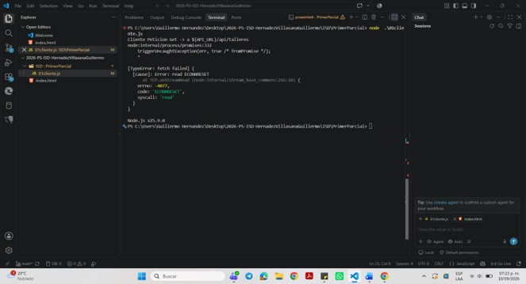
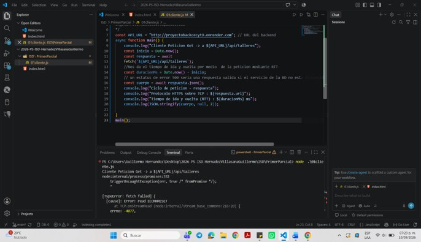

Se pidio que el archivo 01clientes.js se ejecutara con una conexion GET,pero se cayo ya que la conexión no se completó correctamente. El error ECONNRESET indica que la conexión entre el cliente y el servidor fue cerrada o reiniciada antes de recibir una respuesta.
Se realizó el intento de conexión mediante fetch(), pero la API no respondió correctamente y se generó el error TypeError: fetch failed.

